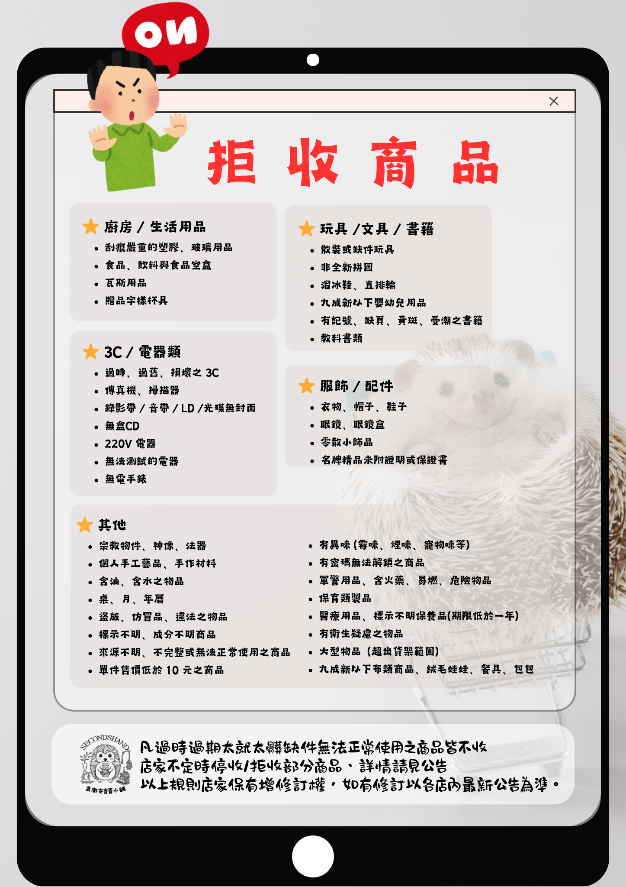

最後更新：2025-11-19
※ 新拒收商品已更新，請各位會員寄賣前請務必確認您的物品是否屬於拒收範圍。
※ 下架之商品請盡快取回，逾期將視商品狀況以捐款戶繼續販售或回收。
※ 超過50CM的大型商品暫時停收。
※ 即日起任何金額取款都需前一天預約。如無法預約日取款，可用LINE告知。
※ 寄賣會員請注意，店內不寄賣衣服、鞋子，請不要拿來哦！
重要說明 — 拒收 / 限收商品
以下為店家公告之「拒收 / 限收商品」。寄賣前請務必確認您的物品是否屬於拒收範圍，以免造成處理成本或直接捐贈、回收處置。
